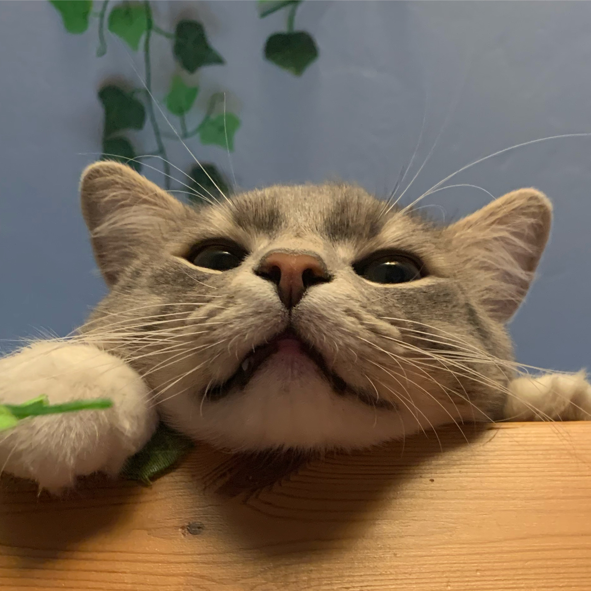

The Cat’s Meow: Tracking Outdoor Cat Movement over Time
Final Project / MATH241 / Spring 2024
Abstract
This paper studies whether age and environment have an impact on indoor-outdoor cat movement in the United States. Data was cleaned and organized to produce two-dimensional map graphs of cat movement. Data was organized by age groups and summarized to provide average distances traveled per day and per 3-minute observation cycle. Results were mixed in regards to whether age was an influential factor in limiting distance and movement. Older cats on average tended to travel longer distances each day, whereas there was little difference among all age groups for distances traveled per 3-minute cycle. Cats tended to not travel far from a central location, likely their home, due to emotional and physical connection. Further research is needed to truly determine whether age is a factor.
Introduction
Many cat owners choose to allow their cats to explore outdoors unrestricted. This phenomenon is known as the indoor-outdoor cat lifestyle, in which proponents believe this offers their pets enrichment without supervision. However, many opposed are concerned whether these cats are safe from larger wildlife like coyotes and raccoons, or if they pose ecological threats to small wildlife like birds and rats they might hunt.
An ecological research paper by Kays et al studies this phenomenon. While this project does not address ecological impacts, the data they collected with the geographic coordinates of cat movements over time is helpful in understanding what causes cats to explore and whether certain factors like age, time spent indoors, or hunting capabilities impact or limit a cat’s ability to explore further distances.
I used two datasets collected by Kays et al that show the geographic coordinates and timestamps for cats (dataset 1) and the metadata on the cat’s lifestyle and data collection (dataset 2). Data was collected by the cat owners, as they strapped a GPS device onto their cat’s collar and returned the GPS data to Kays et al. Cats were located in twelve geographically diverse American states. Dataset 1 included over 600,000 observations from 154 different cats. Dataset 2 included relevant metadata, such as eating habits, age, sex, spay/neuter status, and number of cat siblings in the same home. Observations occurred during a time period from 2013-2016.
Data Analysis
I hope to answer the following research questions to best explore this dataset.
Do younger cats tend to travel longer distances than older cats?
Do cats travel in patterns or “seemingly” randomly (based on environmental stimulus or reactions)?
I utilized two methods of analyzing my data. First, I wrangled my data to include only non-outlier, appropriate observations within the United States for all cats that have an age in the metadata dataset. Then, II created summary boxplots that summarized average distances traveled per age group for 3-minute and day intervals to see how cats of different ages compare. Lastly, I created an interactive Shiny app to allow users to generate custom coordinate graphs based on cat and date selection to show cat movement over time.
Data Wrangling
There were many steps taken to properly wrangle this data. First, I placed the timestamp variable into two different variables, Time and Date, with proper formats (Hours-Minutes-Seconds for Time, and Year-Month-Day for Date). Then, I filtered the main dataset into 141 individual datasets for each cat. This is to prevent the distance formula from calculating distances between each cat, rather than between each observation for each cat.
Then, I created a function to calculate the distance between two sets of coordinate observations. I used the Haversine formula, which is best equipped for calculating distance on a curved surface (specifically the curvature of the Earth). I then applied the function to each cat dataset, merged all cat datasets into one mega dataset, and converted distances from kilometers to meters for ease of readability.
Summary Barplots
To visualize summarized data, I created new datasets to organize summary data. I created new variables that show the average distance and total distance traveled per day and per three minute cycle by cats organized by age. I chose to use barplots, plotting the average distance per three minute cycle and average distance per day on the Y axis, and age of cats on the X axis. The graphs are depicted below.
I chose per day because cats generally follow their owners’ schedules, which is on a 24-hour day cycle. I chose three-minute cycles as this is the automatic observation cycle for the GPS trackers used. It is also a good proxy for short-term movement, whereas per day is a good proxy for long term movement.
Shiny App
I also created a Shiny app. This is an interactive web-based HTML app that allows the user to create visualizations based on their selection of cat and date. Because there were so many different cats and dates available, I am not able to analyze every generated coordinate grid map. However, the app allows users to do so if they choose.
The Shiny app generates coordinate grid maps with longitude coordinates on the Y axis and latitude coordinates on the X axis. Time is coded as a color gradient variable with a scale key on the right. The app also includes the barplots as coded in the section above.
The Shiny app can be found at the link below
I have included example coordinate map graphs below. I cannot look through over 500 coordinate maps that the Shiny app can generate, but I have randomly chosen a select three to include in my discussion and analysis. To do so, I used the same function used in the Shiny app and applied it to three randomly chosen cats on three randomly chosen dates.

Discussion and Conclusion
As we can see, there are mixed results from our summary graphs. Cats ages 10 and up tend on average to travel nearly twice the distances than cats less than 10 years old. However, there is little difference in the average distances traveled per three minute cycle for age. Cats seven years or younger travel only slightly further distances than cats older than seven years per three minute cycle.
A plausible explanation is that younger cats simply spend less time outdoors and their owners did not attach the GPS on the collar for long periods of time. In contrast, owners of older cats might have allowed their cats to roam outside for longer periods of time, allowing them to travel longer outdoors and thus further distances. A reasonable explanation for this behavior is that cat owners may be inclined to trust older cats because they are less likely to be destructive or run away from home. Owners of younger cats may be more distrustful as they have more energy or could run away.
The Shiny app shows us some interesting results. These three cats all tended to cluster around a hub location, and do not travel very far from the location without returning back to it. It can be reasonably assumed that this hub is their owner’s home. Cats as domesticated pets are emotionally and physically attached to their owner and thus their owner’s home.
There are some caveats and limitations to my analysis. Cats, of course, do not travel in perfectly straight lines in linear 2D fashion as the coordinate graphs display them to. The distance calculated variable is also not completely accurate to reality. This is because each observation occurs every three minutes, in which a cat may move back and forth or up and down during this period. Three minutes is a relatively good interval for calculating distances, but of course not perfect. For simplicity of analysis, however, it works well with this project. Additionally, not all cats have the same number of days observed, so some cats will have more data than others. Some cat data may include outliers. While I have removed as many outliers as manually and algorithmicly marked by Kays et al, there could be more outliers I missed. That is a major limitation to using such a large dataset, as I am not able to clean the data as thorough as I would have liked.
Moreover, as all of this data is observational, I cannot use it to draw causal conclusions about cat behavior and movement. It cannot be representative of all cats. Further experimental and psychological studies can be implemented to draw this kind of causality and provide a more in-depth analysis about age as a limiting factor for cat movement.
By analyzing cat movement, my project provides valuable insights to what motivates cats to move and whether they are limited by their age. Cats are incredible creatures and have made such positive impacts in their owners’ lives. They certainly deserve to be studied more!
Data Citation
Kays R, Dunn RR, Parsons AW, Mcdonald B, Perkins T, Powers S, Shell L, McDonald JL, Cole H, Kikillus H, Woods L, Tindle H, Roetman P (2020) The small home ranges and large local ecological impacts of pet cats. Animal Conservation. doi:10.1111/acv.12563

Acknowledgements
Thank you Adrien for a great semester! This class and the projects were very fun and I have learned a lot about how to apply R to many different situations. I hope you have fun in the UK next year!